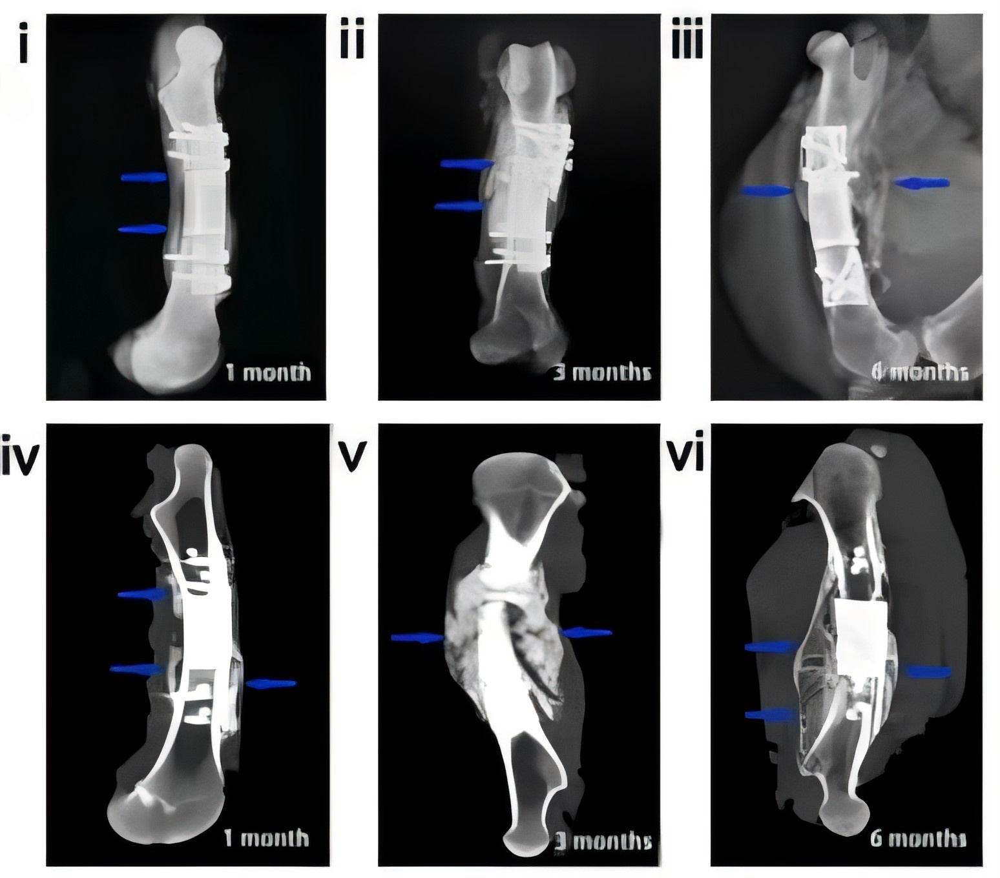
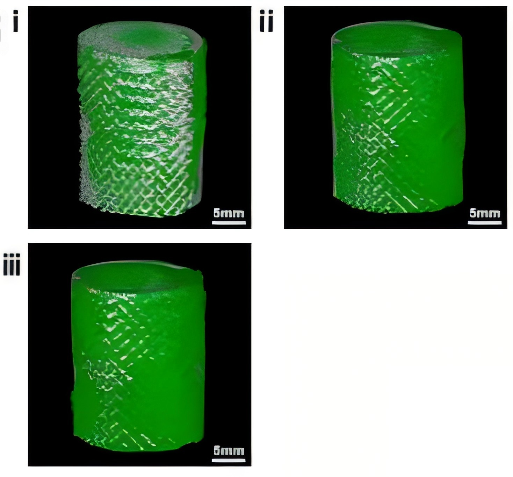
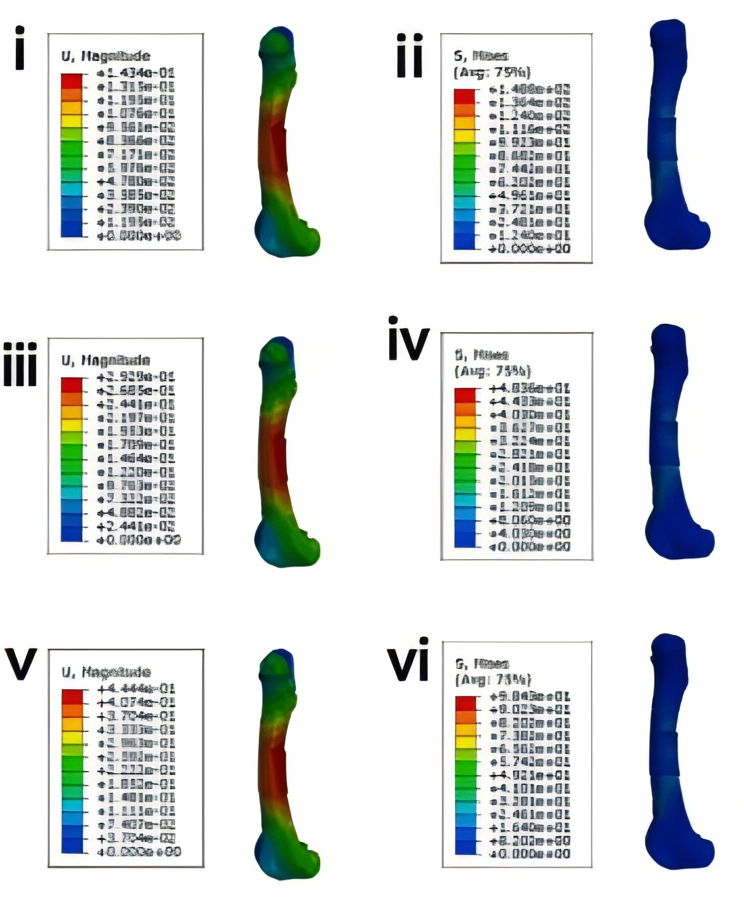
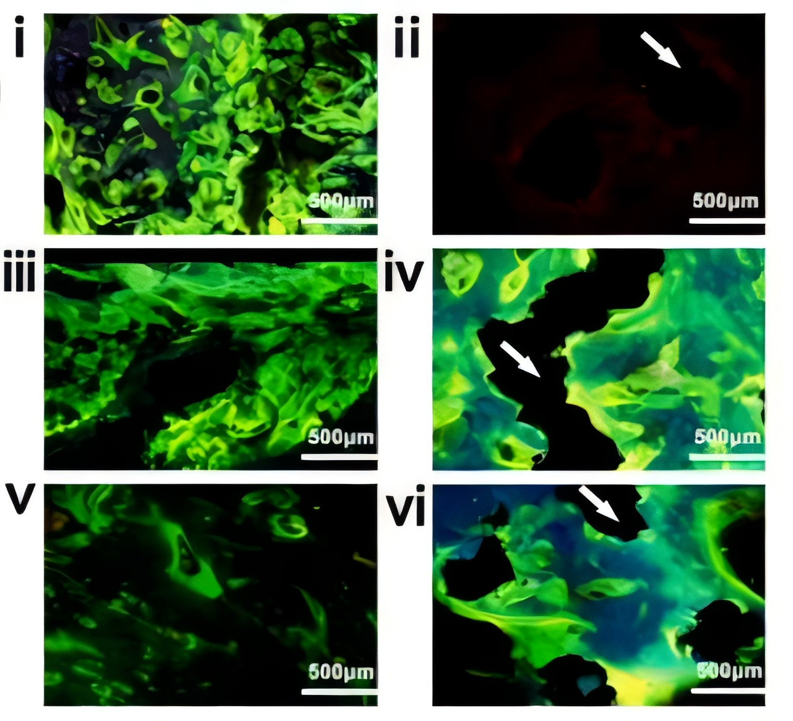
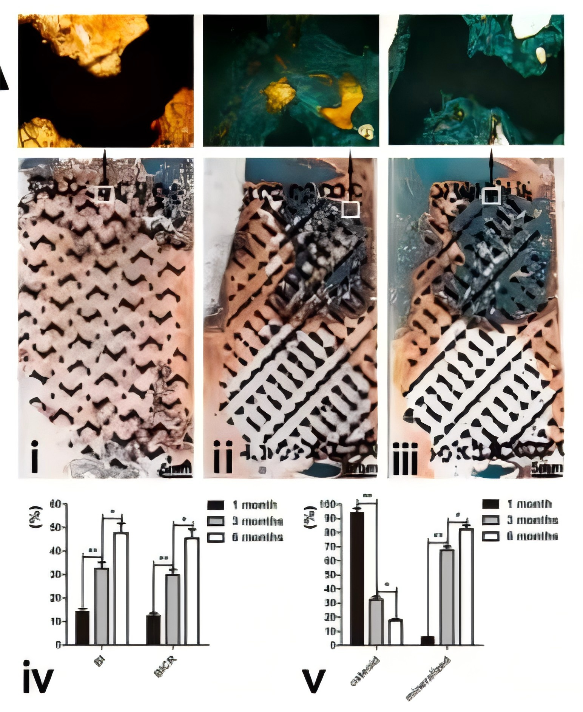
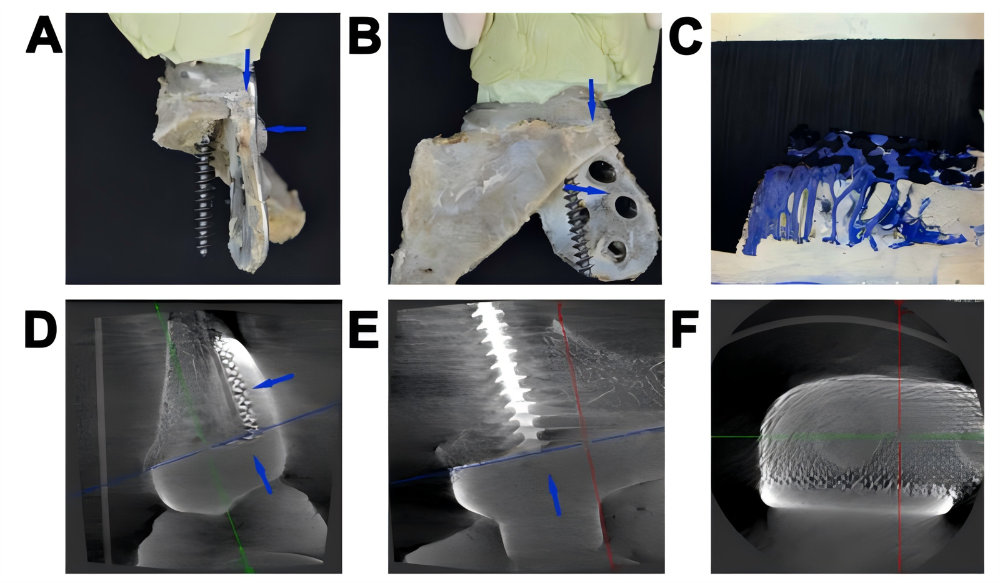
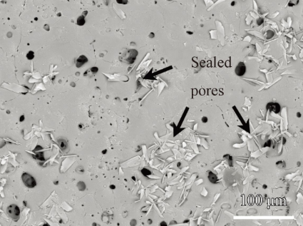
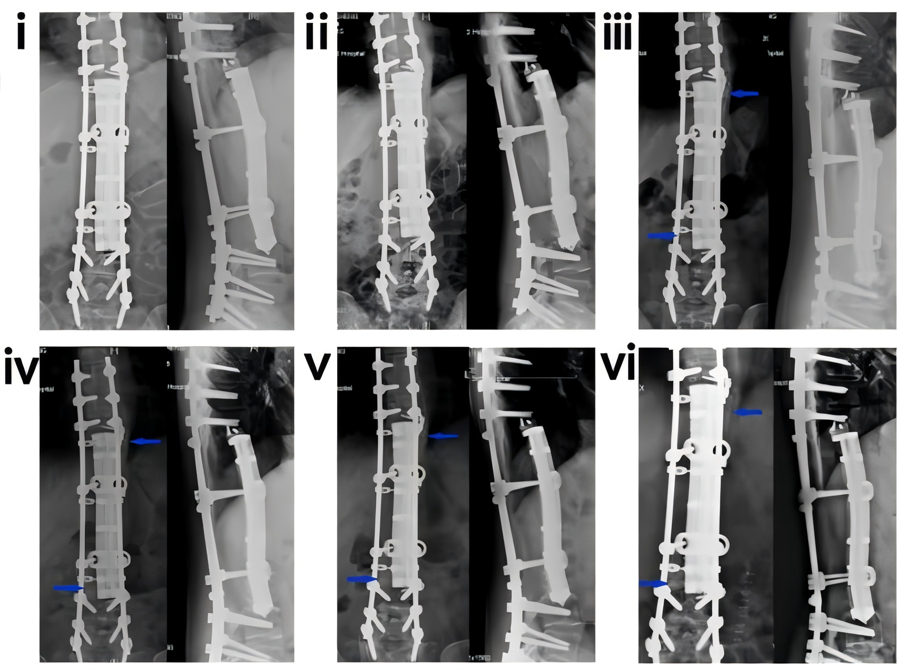
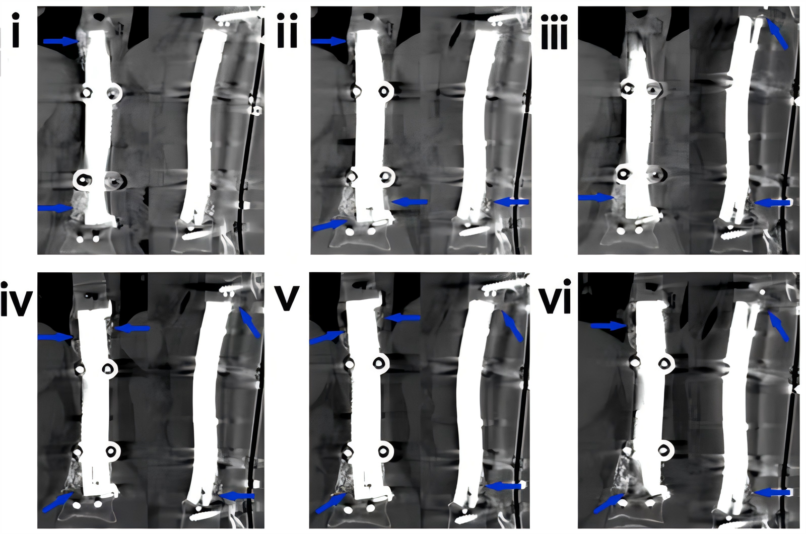

三大核心能力
从影像输入到康复随访的一站式智慧诊疗闭环
AI 交互接口
多模态影像智能检测、自然语言问诊对话，自动生成结构化诊疗方案与恢复计划，全程可追溯。
3D打印内植物
Ti6Al4V 定制化多孔钛接骨板，TPMS 三周期极小曲面结构，MAO 钙磷涂层 + 术中光功能化，弹性模量贴近人骨。
诊疗方案与恢复计划
按炎症期、修复期、重塑期、康复期四阶段输出个性化康复目标、锻炼建议、饮食营养与复查节点。
技术图谱
点击任意图片可放大查看，支持左右切换浏览

结构表征3D打印多孔钛合金内植物 SEM 显微结构

结构表征Micro-CT 三维重构 · TPMS 多孔架构

仿真验证有限元应力分布分析（0~5MPa 安全区间）

临床验证骨长入仿真验证 · 提升 42%

临床验证术后骨愈合随访影像

术前规划骨盆三维重建与术前规划

表面改性MAO 微弧氧化钙磷涂层表面形貌

影像数据骶骨 CT 断层影像示例

影像数据骨盆 X 线平片示例
亮点数据
来自三家临床合作中心的真实随访结果
+42%
骨长入提升
12%→4%
感染率下降
10-15min
术中光功能化
65%±5%
孔隙率
1182万
2026 年订单
临床合作案例
头部三甲医院联合临床验证，数据经长期随访确认
浙大二院 骨长入验证
- 定制化多孔钛接骨板植入后骨长入 +42%
- 术后感染率由 12% 降至 4%
- 内植物弹性模量贴近人骨，应力遮挡显著降低
南方医院 康复提速
- 四阶段康复计划全程数字化管理
- 患者康复周期缩短 35%
- 复查节点智能提醒，随访依从性明显提升
昆医附一院 感染防控
- 光功能化 + 万古霉素涂层双重防线
- 感染风险降低 30%
- 复杂骨盆骨折手术时间平均缩短 40 分钟